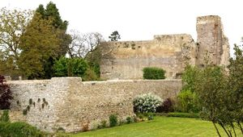
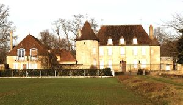
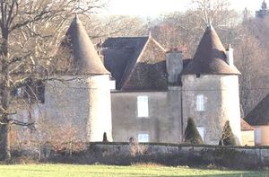
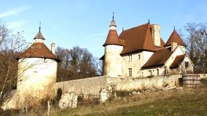
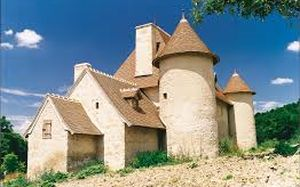
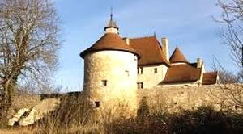
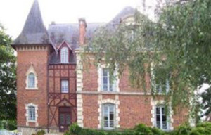

Recensement Jean-Claude Truffet







| Département | 03 — Allier |
| Canton | St-Pourcain-sur-Sioule |
| Commune | Verneuil-en-Bourbonnais |
| Type d'édifice | Maison forte |
| Période d'origine | XVI |
Quatre châteaux à Verneuil en Bourbonnais, Chaumejean du XIXe siècle avec tour carrée, des Garennes du XVe siècle tours en angles, de Vaux du XVIIe siècle et de Vousset du XVIe siècle. VERNEUIL est au Moyen-Age une des dix-sept châtellenies du Bourbonnais, elle est dotée d'un collège de chanoines, 60 à l'origine, établis en la collégiale Saint-Pierre. Le duc Louis II de Bourbon y construisit un château. Verneuil devient ensuite châtellenie royale dont Jean de Cuzy, capitaine châtelain de Verneuil.
CHAUMEJEAN, cette terre connue depuis la fin du XVe siècle était détenue par une famille éponyme. Colas de Chaumejean est mentionné parmi les gentilshommes bourbonnais dans l'Armorial de Guillaume Revel. GARENNES, au début du XVIe siècle, est mentionné pour la première fois un seigneur des Garennes en la personne de Jean de Cuzy, capitaine châtelain de Verneuil, dont la famille était signalée en cette paroisse dès le XVe siècle. Vers 1554, des Garennes passèrent à la famille Charlet dont les membres ne s'installèrent au château que vers 1689. Mais en 1699, à la mort de Guillaume Charlet, les Garennes échouèrent à l'une de ses filles, Madeleine, mariée depuis 1682 à Charles de Saisbut, maire perpétuel de Saint-Pourçain. La famille Sainsbut des Garennes possède encore la terre et le château dont elle a pris le nom. Dès le XIVe siècle, existait une motte fortifiée au lieu-dit des Garennes, mais les constructions actuelles semblent dater du XVe siècle. VOUSSET, le premier propriétaire connu du Vousset est Sébastien Féraud, mentionné dans les années 1563-1575, puis aux Billard dès la fin du XVIe siècle et jusqu'au début du XVIIIe siècle. En 1713, Le Vousset est vendu à François de Barbancois marchand de Saint-Pourçain qui est désigné sieur du Vousset. Par la suite, la propriété, passe aux Sainsbut des Garennes, puis aux Imbert de Ballore.
Chaumejean, bâti au XIXe siècle en briques polychromes appareillées. Un logis presque carré composé de deux niveaux, présente des fenêtres, chaînages d'angles et corniches en pierres blanches dans le style Louis XIII; il est augmenté d'une aile plus étroite placée en retrait et dont la façade est formée de pans de bois aux formes variées remplis d'un appareil de briques rouges à motifs losangés noirs. Une tour carrée plus haute que l'ensemble du logis, et légèrement débordante, complète le pignon. Cette tour, sans chaînage d'angle en pierre, contient une chapelle à l'étage. Garennes, le corps de logis principal, bordé au sud par une cour délimitée par deux ailes de communs, était entouré de fossés qui furent comblés. Il présente un plan rectangulaire flanqué aux angles de la façade Ouest de 2 tours circulaires, et à ceux de la face est de deux tourelles plus petites entre lesquelles fut construite, au XIXe siècle, une avancée en terrasse. L'intérieur fut refait à la fin du XVIIe siècle. Au siècle suivant, on aménagea la tour nord-ouest en chapelle alors que la tour opposée au sud-ouest fut utilisée dans sa partie haute comme pigeonnier.
Vaux est un ensemble de bâtiments installé dans un joli parc boisé. Le corps de logis principal, de plan rectangulaire, date du XVIIe siècle. Il est agrandi par deux pavillons carrés accolés aux pignons. A quelque distance, un pigeonnier carré complète l'ensemble. Verneuil, entourée de remparts est l'une des villes les plus importantes du duché de Bourbon. La ville est prise en 1465 par Louis XI, qui fait démanteler les remparts et le château. Vousset, cette maison forte se trouvait en ruine au début du XXe siècle. Cette demeure, au corps de logis carré percé de fenêtres à meneaux et flanquée de tours circulaires à lanternon, a été sauvé de la ruine à la fin du XXe siècle.
Le duc Louis II de Bourbon Famille Sainsbut des Garennes "
Château de Verneuil, de Vousset, de Garennes, de Chaumejean et de Vaux à Verneuil